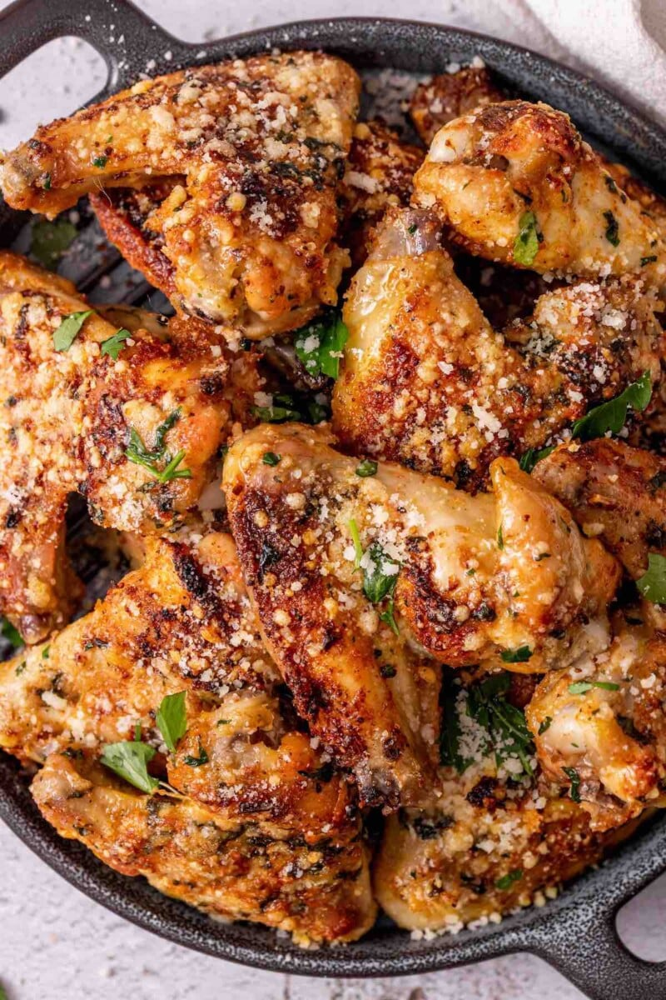

Garlic Parmesan Wings

Description
These oven-roasted garlic parmesan wings are here to
steal the show. Perfectly juicy inside and crispy on
the outside, these are bound to become one of your
favorite appetizers ever.
Ingredients
- Chicken wings
- Parmesan cheese
- Spices
- Butter
- Garlic
- Parsley
- Oil
- Salt
Instructions
-
Combine garlic powder, onion powder, paprika,
black pepper, and salt.
-
Sprinkle the chicken wings with the seasoning mix
and rub to coat them well.
-
Arrange the chicken wings on a baking tray and
drizzle with olive oil. Bake the wings on the
middle rack for 45 minutes in an oven preheated
to 450 degrees.
-
To make the garlic parmesan sauce, melt the butter
in a small pot and combine it with minced garlic
and chopped parsley leaves
-
Pour the mixture over the baked wings. Sprinkle
generously with parmesan cheese.
-
Bake the wings for another 5 minutes until the
wings become crispy.